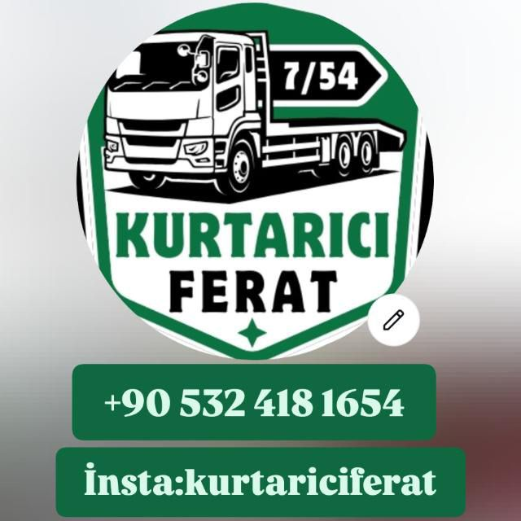

#SAKARYA #ERENLER #CEKICI #YOLYARDIM #7/54 #OTO-KURTARMA #ADAPAZARI #SERDIVAN #KURTARICI-FERAT #ACIL-YOL-YARDIM #ARAC-TASIMA #HIZLI-MÜDAHALE #GÜVENLI-TASIMA #EN-YAKIN-CEKICI #SAKARYA-OTO-KURTARICI #ERENLER-SANAYI #FERHAT-CEKICI #OTO-YARDIM
ERENLER / SAKARYA
KURTARICI FERAT

7/54
Acil Yardım Hattı
0532 418 16 54
WhatsApp Konum At
@kurtariciferat
7/54 Kesintisiz
Hizmet
Tüm Araç
Modelleri